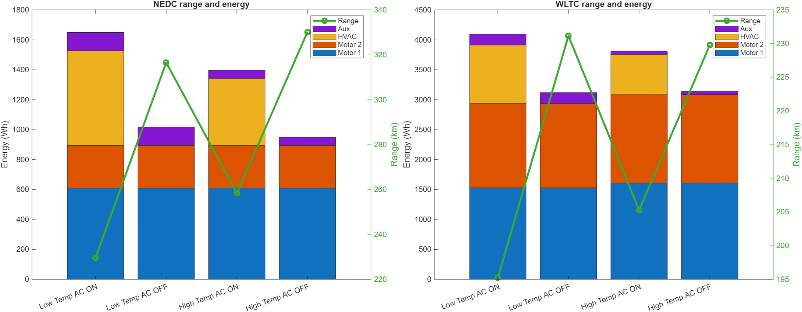

Estimate Electric Vehicle Range
Range anxiety, cost, and safety are the central challenges in BEV adoption. Real-world range depends heavily on conditions: hot versus sub-zero ambient temperatures, HVAC load, and whether the driver profile is aggressive or relaxed.
This workflow evaluates a 400V pack over the industry-standard NEDC, WLTC, and EPA cycles under worst-case driving scenarios, sweeping ambient temperature and HVAC on/off. It reports range per cycle and the losses across each subsystem so you can see where energy goes under each condition.
Quick Setup
- Open the workflow Live ScriptOpen Live Script
Open
BEVRangeEstimationMain.mlxto estimate range over the EPA, NEDC, and WLTC cycles. - Configure the electrothermal vehicle
The cycle runner configures
BEVsystemModelwithVehicleElectroThermaland loads the shared vehicle parameters. - Choose the drive cycle and scenariosOpen NEDC runner
Review the shipped range data or run a cycle workflow at −10 °C and 35 °C, each with HVAC on and off.
- Run and reconcile the energy balanceOpen BEV system model
Compare range, SOC depletion, and subsystem energy use with consistent initial SOC and stopping criteria.
Key Models and Components
| Model or component | Role | Reference |
|---|---|---|
| Vehicle template | Selects the electrical or electrothermal scope of the range study. | View template |
| High-Voltage Battery | Provides the SOC depletion and battery-energy change used to estimate range. | View component |
| Driveline | Provides road-load and driveline losses for each drive cycle. | View component |
| Motor Drive | Provides traction-machine and inverter losses for the energy balance. | View component |
Expected Results

The workflow produces these result types:
- Range estimate for each drive cycle
- SOC depletion profile
- Ambient/HVAC comparison and subsystem energy contributions
Supporting Files
| Purpose | Artifact | Action |
|---|---|---|
| Main workflow | BEVRangeEstimationMain.mlx | Open Live Script |
| EPA runner | BEVrangeEstimationEPA.m | Open file |
| NEDC runner | BEVrangeEstimationNEDC.m | Open file |
| WLTC runner | BEVrangeEstimationWLTC.m | Open file |
Checks Before Using Results
- The Live Script loads saved range MAT-files; run the cycle-specific scripts to regenerate the detailed simulations.
- Confirm the active template and component references.
- Use the same initial SOC and stop criteria when comparing cycles.
- Reconcile battery energy change with traction, auxiliaries, and component losses.